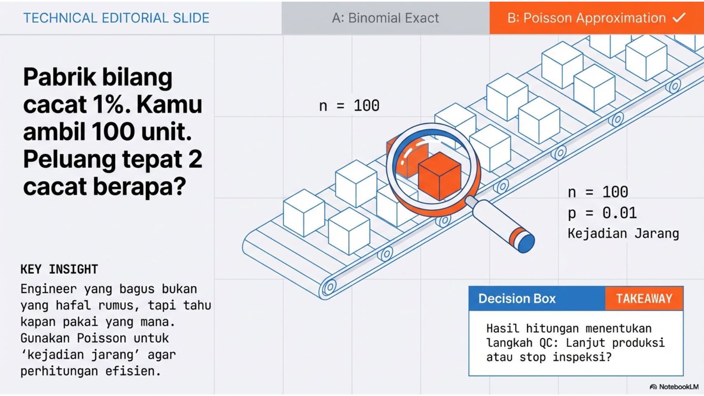

Lihat kode
# Tulis kode Python Anda di sini
import numpy as np
import pandas as pd
import matplotlib.pyplot as plt
import scipy.stats as stats
print("Siap untuk komputasi Minggu 06!")Siap untuk komputasi Minggu 06!Binomial Distribution, Poisson Distribution

Week 06: Distribusi Probabilitas Diskrit (Binomial & Poisson)
“Simulation First, Math Later” menghubungkan teori “kering” dengan aplikasi nyata seperti Gacha Games, Server Traffic, dan Cybersecurity.
Topik: Distribusi Binomial & Poisson Tema Misi: “The Digital Pulse: Counting Clicks, Bugs, and Attacks”
Fokus: Memahami pola “sukses/gagal” berulang dan fenomena “kejadian langka” melalui simulasi visual.
numpy.random.binomial(n=100, p=0.01, size=1000).Fokus: Menggunakan Python untuk menghitung risiko kegagalan sistem dan kapasitas server.
scipy.stats.poisson.binom vs poisson.scipy.stats (modul binom dan poisson).binom.pmf(k, n, p): Peluang tepat \(k\) sukses.poisson.cdf(k, mu): Peluang kumulatif ( \(\le k\) kejadian). Berguna untuk menghitung “Peluang server tidak overload”.numpy.random.poisson(lam, size): Simulasi data dummy trafik.Judul: Week 6: The Network Guardian
Deskripsi: Mahasiswa diberikan log data simulasi jaringan. Mereka harus memodelkan pola trafik normal dan membuat skrip otomatis untuk mendeteksi anomali.
Set Soal (Notebook): 1. Modeling (30 poin): * Analisis data historis: Hitung rata-rata request/detik (\(\lambda\)). * Visualisasikan histogram data vs kurva teoritis Poisson(\(\lambda\)). Apakah cocok? 2. Capacity Planning (30 poin): * Perusahaan ingin menjamin 99.9% waktu server aman. * Cari nilai \(C\) (kapasitas) sedemikian rupa sehingga \(P(X \le C) \ge 0.999\). 3. Anomaly Detection (40 poin): * Buat fungsi is_anomaly(current_requests). * Jika probabilitas kejadian tersebut \(< 0.05\%\) berdasarkan distribusi Poisson, kembalikan True. * Uji fungsi tersebut pada dataset serangan (dataset kedua).
Berikut adalah 15 soal yang diambil dari referensi Desain Kurikulum Statistika Generasi Z (Bagian Minggu 06)–.
1. Soal: Apa syarat-syarat utama agar sebuah eksperimen dapat dimodelkan dengan distribusi Binomial? * Solusi: Eksperimen terdiri dari \(n\) percobaan identik, setiap percobaan hanya memiliki dua hasil (sukses/gagal), probabilitas sukses \(p\) konstan untuk setiap percobaan, dan setiap percobaan saling independen.
2. Soal: Mengapa distribusi Poisson sering disebut sebagai distribusi untuk kejadian langka? * Solusi: Karena Poisson sering diturunkan dari distribusi Binomial di mana jumlah percobaan \(n\) sangat besar (menuju tak hingga) namun probabilitas sukses \(p\) sangat kecil (menuju nol), sehingga kejadian “sukses” relatif jarang terjadi dibanding total kemungkinan.
3. Soal: Jelaskan hubungan antara distribusi Binomial dan distribusi Bernoulli. * Solusi: Distribusi Bernoulli adalah kasus khusus dari distribusi Binomial dengan jumlah percobaan \(n=1\). Distribusi Binomial adalah penjumlahan dari \(n\) variabel acak Bernoulli yang independen dan identik.
4. Soal: Dalam kondisi apa distribusi Poisson dapat digunakan sebagai pendekatan untuk distribusi Binomial? * Solusi: Ketika jumlah percobaan \(n\) sangat besar (\(n \ge 30\) atau \(n \to \infty\)) dan probabilitas sukses \(p\) sangat kecil (\(p \le 0.05\) atau \(p \to 0\)), serta rata-rata \(np\) tetap konstan sebagai \(\lambda\).
5. Soal: Apa makna parameter \(\lambda\) dalam distribusi Poisson dalam konteks lalu lintas paket data? * Solusi: Parameter \(\lambda\) merepresentasikan rata-rata jumlah paket data yang tiba atau diproses per satuan waktu (misalnya: paket per detik) atau per satuan ruang.
6. Soal: Sebuah sistem mengirimkan 10 paket data. Jika probabilitas satu paket rusak adalah 0,1, berapa probabilitas tepat 2 paket rusak? * Solusi: Gunakan Binomial(\(n=10, p=0.1\)). \(P(X=2) = \binom{10}{2} (0.1)^2 (0.9)^8 = 45 \cdot 0.01 \cdot 0.430 = 0.1937\).
7. Soal: Rata-rata serangan siber yang terdeteksi pada firewall adalah 2 per jam. Berapa probabilitas tidak ada serangan dalam satu jam ke depan? * Solusi: Gunakan Poisson(\(\lambda=2\)). \(P(X=0) = \frac{e^{-2} 2^0}{0!} = e^{-2} \approx 0.1353\).
8. Soal: Dalam pengujian software, probabilitas menemukan bug pada satu baris kode adalah 0,001. Jika ada 1.000 baris kode, gunakan pendekatan Poisson untuk menghitung probabilitas ada tepat 1 bug. * Solusi: \(\lambda = n \cdot p = 1000 \cdot 0.001 = 1\). \(P(X=1) = \frac{e^{-1} 1^1}{1!} = e^{-1} \approx 0.3679\).
9. Soal: Sebuah database melayani rata-rata 50 query per detik. Hitung probabilitas server menerima lebih dari 60 query dalam satu detik tertentu. * Solusi: Gunakan Poisson(\(\lambda=50\)). Kita cari \(P(X > 60) = 1 - P(X \le 60)\). Ini biasanya dihitung menggunakan tabel atau komputer (1 - poisson.cdf(60, 50)), hasilnya sekitar 0.072 (7.2%).
10. Soal: Analisis probabilitas jumlah user yang mengklik iklan dalam 100 impresi jika click-through rate (CTR) adalah 2%. * Solusi: Ini model Binomial(\(n=100, p=0.02\)). Kita bisa menghitung peluang untuk berbagai jumlah klik (0, 1, 2, dst) untuk memprediksi performa iklan. Rata-rata klik yang diharapkan adalah \(E[X] = 100 \cdot 0.02 = 2\) klik.
11. Soal: Gunakan scipy.stats.binom.pmf untuk memplot probabilitas jumlah sukses dari 0 hingga 20 dalam eksperimen dengan \(n=20\) dan \(p=0.5\). * Solusi: python from scipy.stats import binom import matplotlib.pyplot as plt x = range(21) plt.bar(x, binom.pmf(x, 20, 0.5)) plt.show()
12. Soal: Tulis program Python yang membandingkan hasil perhitungan distribusi Binomial dan pendekatan Poisson untuk \(n=100\) dan \(p=0.01\). * Solusi: python from scipy.stats import binom, poisson n, p = 100, 0.01 mu = n * p print(f"Binom P(X=2): {binom.pmf(2, n, p)}") print(f"Poisson P(X=2): {poisson.pmf(2, mu)}")
13. Soal: Simulasikan proses kedatangan Poisson dengan membangkitkan bilangan acak dan hitung jumlah kejadian dalam interval waktu tertentu. * Solusi: python import numpy as np # Simulasi 1000 jam, rata-rata 5 event/jam simulasi = np.random.poisson(lam=5, size=1000) print(f"Rata-rata simulasi: {np.mean(simulasi)}")
14. Soal: Visualisasikan perubahan bentuk distribusi Binomial saat parameter \(p\) bervariasi dari 0,1 hingga 0,9. * Solusi: python n = 20 for p in [0.1, 0.5, 0.9]: plt.plot(binom.pmf(range(n+1), n, p), label=f'p={p}') plt.legend(); plt.show()
15. Soal: Implementasikan fungsi untuk menghitung probabilitas kumulatif Binomial tanpa menggunakan pustaka eksternal. * Solusi: python def fact(n): return 1 if n<=1 else n*fact(n-1) def comb(n, k): return fact(n) // (fact(k) * fact(n-k)) def binom_cdf(k, n, p): return sum(comb(n, i) * (p**i) * ((1-p)**(n-i)) for i in range(k+1))
Distribusi Binomial untuk jumlah sukses dalam n percobaan, Distribusi Poisson untuk jumlah kejadian dalam interval waktu/ruang tertentu.
Sebuah pabrik ingin menjamin kualitas produk. Diketahui rata-rata cacat adalah 1%. Berapa peluang menemukan tepat 2 barang cacat dalam sampel 100 unit?
Menggunakan rumus distribusi Binomial (atau aproksimasi Poisson jika n besar dan p kecil). Jika peluang cacat melebihi ambang batas toleransi, manajer memutuskan untuk menghentikan lini produksi untuk inspeksi.
Gunakan sel di bawah ini untuk mengimplementasikan simulasi atau penyelesaian masalah di atas menggunakan Python.
# Tulis kode Python Anda di sini
import numpy as np
import pandas as pd
import matplotlib.pyplot as plt
import scipy.stats as stats
print("Siap untuk komputasi Minggu 06!")Siap untuk komputasi Minggu 06!